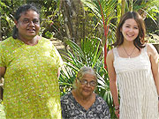
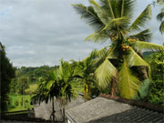
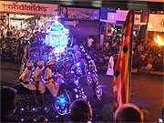
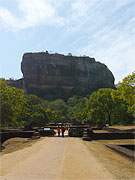
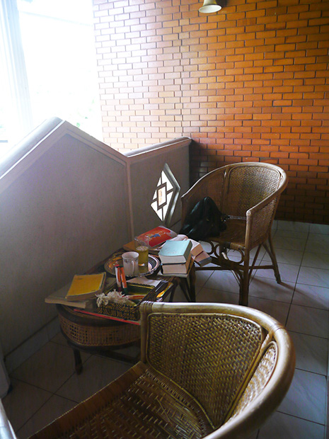

「この留学プログラムに決めたのは、メールの対応が良かったのと、日本語を話せる先生がいたからです。
英語レッスンは、簡単な英会話しかできない私のために、先生は分かりやすく説明してくださいました。
スリランカでのホームステイは、自分にとって、とても良い経験になりました。
初めてのホームステイという不安がありましたが、終始楽しく快適に過ごせました。
母と娘だけの家庭でしたので、特に安心でした。
低開発村視察は、私の英語のレベルが低かったので、少し難しかったです。


スリランカは、すごく素敵な国でした。
インドには行ったことがありますが、また違っていて温和な人が多くて過ごしやすくて食事も合いますし必ずまた訪れたい国です。
かなり現地民になじめたので、とてもうれしかったです。
今までで一番印象に残った国です。
マーネルさんにはとても良くしていただき、終始快適に過ごすことができました。
ほどよく距離をおいてくれましたし、ホームステイ後の旅行の日程の相談も快くのってくれました。
とても良かったです。
私の場合は、ホームステイ１週間、観光１週間というスケジュールだったので、とても要領良く周れました。
英会話に料理に観光に、楽しいことづくしの最高な２週間でした。


これもBeインターナショナルと出会ったからであって、とても感謝しております。
また同じホームステイ先へ行きたいです。
蚊取り線香を持って行ってなかったので、次回は持って行きます。
またスリランカを訪れる際にはよろしくお願い致します。」